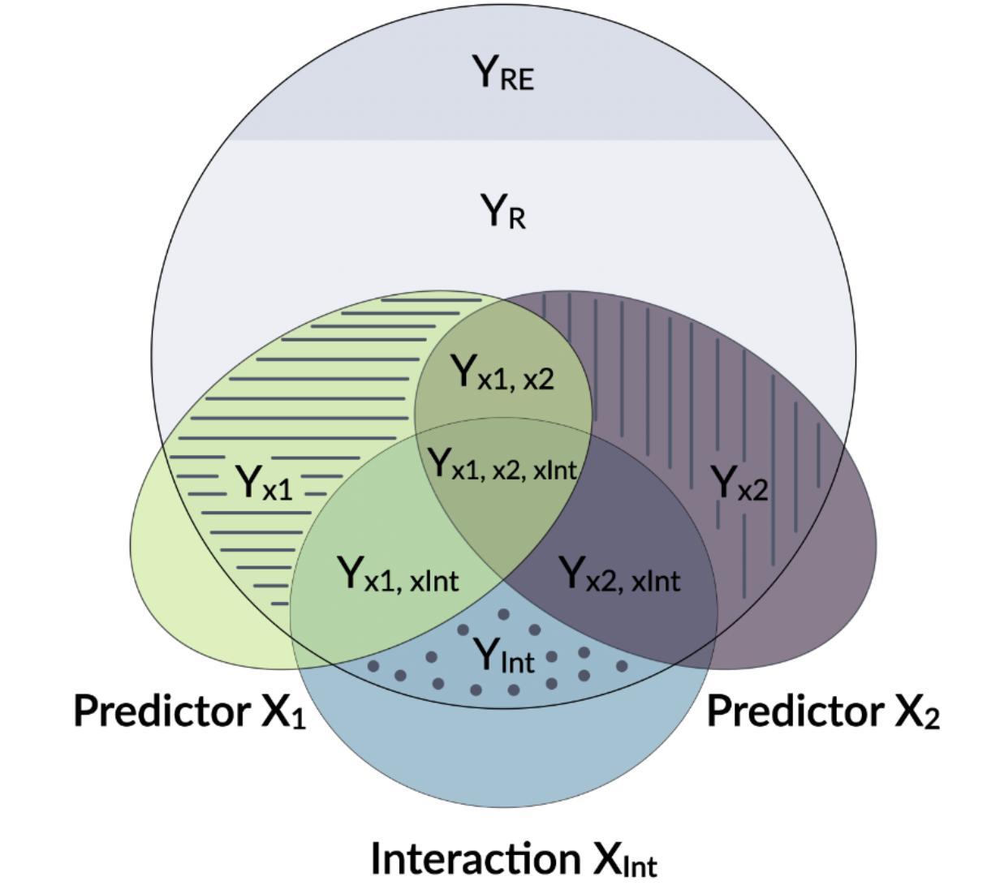
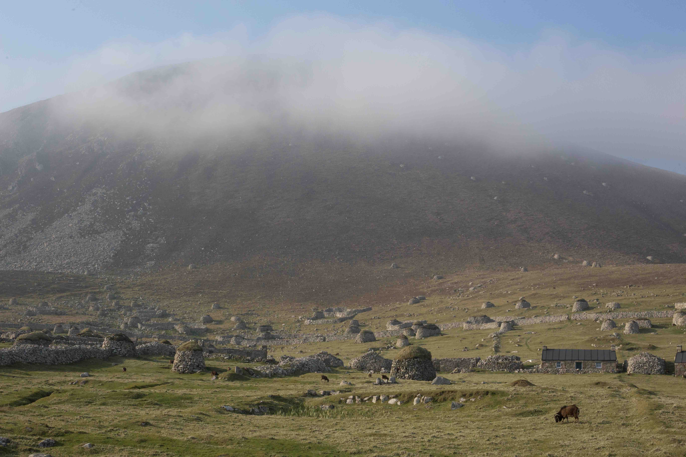

projects
Software
rptR: Intra-class coefficients for hierarchical models.
Methods in Ecology and Evolution (2017) | Code
:ü••

inbreedR: Identity disequlibria and more.
Methods in Ecology and Evolution (2016) | Code
:ü••
GCalignR: Aligning gas chromatography samples.
Plos One (2018) | Code
:ü••
Research
selected, full list here.
Quantitative and evolutionary genetics

Exploring lethal mutations and their evolutionary dynamics.
Evol letters (2024) | Code
:ü••
Long runs of homozygosity have a higher mutation load because their haplotypes are younger.
Evol Letters (2021) | Code
:ü••
Effect size and genetic basis of inbreeding depression in the wild.
Nature Comms (2021) | Code
:ü••
Molecular ecology
Industrial exploitation brought one-third of pinniped species to the edge of extinction.
Nature Comms (2018) | Code
:ü••
Skin chemicals encode clues to identify offspring, home colony and potential mates in fur seals.
PNAS (2015) | Code | Article in the Sueddeutsche Zeitung.
:ü••
Conservation genetics
Behavioural ecology
Biased sex ratios and the impact of early survival on female polygyny.
PNAS (2017) | Code in Supplementary Material
:ü••
Research consulting
Impacts of systemic inbreeding in Thoroughbred racehorses.
Proceedings of the Royal Society B (2022)
:ü••
Side projects

:x el
We scanned the genomes of thousands of wild Soay sheep for embryonic lethal mutations. These mutations prevent an individual from being born, should it be unlucky enough to receive the same genetic variant from both mum and dad. We found a few and wondered how they are maintained in the population. We show that despite their negative effects, these mutations can persist when genetically linked to beneficial variants.
Authors | MA Stoffel, SE Johnston, JG Pilkington, JM Pemberton
:x roh
Runs of homozygosity (ROH) are long stretches of homozygous genotypes, and turn out to be a weirdly insightful feature of the genome. The longer an ROH is, the fewer generations in the past is it’s common ancestor haplotype. We show using simulation and empirical genome data that such long ROH have a higher density of deleterious mutations, as natural selection had less time to select against them, compared to short ROH. This has been hypothesised before, but never been shown using real fitness data.
Authors | MA Stoffel, SE Johnston, JG Pilkington, JM Pemberton
:x id
We know that inbreeding is bad for offspring fitness since Darwin or maybe even since biblical times. The phenomenon is called inbreeding depression and is relevant not just for animals but also for humans. Studying a densely pheno- and genotyped wild population of bronze-age sheep, we show that the effects of even slight inbreeding on survival are severe. We uncover some of the underlying genetic mechanisms using a novel type of genome-wide association study to estimate the effects of deleterious mutations across the genome. This is possibly the most extensive study of its kind, outside of humans.
Authors | MA Stoffel, SE Johnston, JG Pilkington, JM Pemberton
:x nes
:Northern elephant seals have the second-largest sexual size dimorphism of any mammal (right after their Southern sister-species). Adult males can be 3-5 times as heavy as females. Why is that? Sexual selection has favored larger males because they are able to defend large harems of females on the beach against competitors.
In young elephant seals (pups) you can’t really spot a difference between males and females yet. However, when measuring their gut microbiome, sampled with a very long cotton swab, we find very strong sex-differences from early on. This opens the possibility for microbes to provide an adaptation to these two very different life-history strategies of female and male elephant seals.
Authors | Martin A Stoffel, Karina Acevedo‐Whitehouse, Nami Morales‐Durán, Stefanie Grosser, Nayden Chakarov, Oliver Krüger, Hazel J Nichols, Fernando R Elorriaga‐Verplancken, Joseph I Hoffman
:x bot
The scale of industrial seal hunting in the 18th-20th century was large, yet somehow overshadowed by the even larger whaling industry. Using genetics and a dataset of more than 11,000 seals, we estimate that many populations were on the edge of extinction. While only two species went extinct so far (the Carribean monk seal and the Japanese sea lion), others have lost most of their diversity.
Authors | MA Stoffel, Emily Humble, AJ Paijmans, Karina Acevedo-Whitehouse, Barbara Louise Chilvers, B Dickerson, F Galimberti, Neil J Gemmell, SD Goldsworthy, HJ Nichols, Oliver Krüger, S Negro, A Osborne, T Pastor, Bruce Cameron Robertson, S Sanvito, JK Schultz, ABA Shafer, Jochen BW Wolf, Joseph I Hoffman
:x plov
Around 60% of adult snowy plovers are male, leading to a mating system where females are polygynous, because they can chose. My friend Luke led this project, where we wanted to know where this sex bias comes from. Turns out, at birth its 50/50, and most of the sex-bias in adults starts in juveniles, where males have lower survival rates than females. We argue that two-sex population models (as used in our study) are underused but essential to understand population dynamics and light on the remaining mysteries around sexual selection.
Authors | Luke J Eberhart-Phillips, Clemens Küpper, Tom EX Miller, Medardo Cruz-López, Kathryn H Maher, Natalie Dos Remedios, Martin A Stoffel, Joseph I Hoffman, Oliver Krüger, Tamás Székely
:x chem
Fur seal mothers have to find their own offspring in dense colonies among thousands of others when they return from their foraging trips at sea. Over distance, calls seem important but at close range sniffing is common. We showed that seal scent glands contain a mix of chemicals, which might be partially determined by genes and which make it possible to identify related individuals. To do this, we developed a new algorithm to work with gas-chromatography data from wild animals (GCalignR, see below) and borrowed analytical methods from psychology.
Authors | Martin A Stoffel, Barbara A Caspers, Jaume Forcada, Athina Giannakara, Markus Baier, Luke Eberhart-Phillips, Caroline Müller, Joseph I Hoffman
:x horse
We show that genomic inbreeding reduces the changes of a Thoroughbred horse ever making it to the racecourse, and pinpoint a genomic region where homozygosity has a particularly large effect, independent of genome-wide inbreeding. Results were a paper, the full reproducible analysis and a patent for the method.
Authors | Emmeline W Hill, Martin A Stoffel, Beatrice A McGivney, David E MacHugh, Josephine M Pemberton
:x oryx
to do
Authors | sEmily Humble, Martin A. Stoffel, Kara Dicks, Alex D. Ball, Rebecca M. Gooley, Justin Chuven, Ricardo Pusey, Mohammed Al Remeithi, Klaus-Peter Koepfli, Budhan Pukazhenthi, Helen Senn, Rob Ogden
:x ae
Simulations of complex systems are slow. To speed them up for research and application, we have to emulate them, often using machine learning. This is difficult though. AutoEmulate’s goal is to provide a low-code platform to do all this automatically. I’ve created the package and was lead developer during my time at the Turing Institute. On the left is the old hex logo.
:x rp
rptR calculates intra-class coefficients (also called repeatabilities, hence the name) based on generalised linear mixed models. It does just that, but pretty well, and has somehow become a standard in various fields. Hence the 191x field-citation ratio.
:x p2
partR2 uses a few tricks to calculate the explained variance per fixed effect in GLMMs. There’s not much else doing this properly, so it has become quite popular. But take care: it’s key to think what exactly it is that you want to know, especally for more complicated models involving interactions etc.
:x in
inbreedR was my first package. It translated a relatively obscure population genetic metric called the identity disequilibrium (there isn’t even a Wikipedia page) into usable open-source software. It also calculates a few other practical things such as multilocus-heterozygosity efficiently for many markers (thanks to a colab with a proper mathematician)
:x gc
GCalignR is for field chromatography samples. These can be very noisy and difficult to align with respect to each other using normal aligners. We developed a simple, rule-based, human-in-the-loop algorithm to make this work. It’s actually quite suprising how well it works given how simple it is. Try it out if you have messy field samples.
:x mi
We collaborated with Global Witness in a short project that used satellite images to detect unregulated rare-earth mining sites in Myanmar.